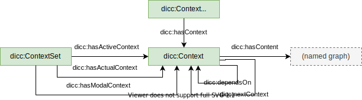

The Digital Construction Contexts contain the definitions to maintain different realms of information, for instance, information about

The central class is dicc:Context that through dicc:hasContent refers to a named graph (of an RDF dataset). Each different model, version, or plan needs to have its own context; as a result its data is contained is a separate named graph, which makes it possible to separate actual values from planned values, etc.
Contexts are thematically organized into context frameworks (dicc:ContextFrameworks). An example is the USA BIMForum LOD framework. Different contexts can be active at different situations, which can be represented with context sets (dicc:ContextSet). For example, there can be a default context set that specifies the currently active contexts. There can also be context sets for different milestones that specify the context that were active at the time of the milestone.